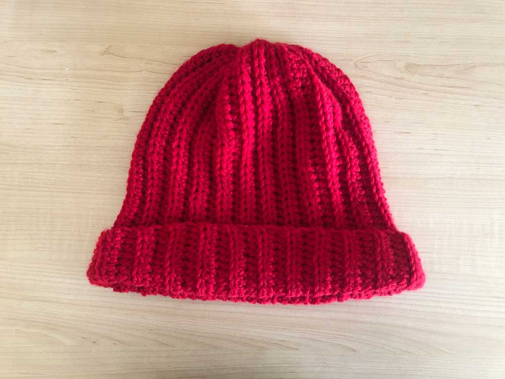

Where to Donate
I recommend finding local organizations that accept handmade donations of cold-weather clothing and accessories, especially if you live in a colder climate. Look within your community to see where help is needed.
Some places to look:
- Churches
- Community centers
- Homeless shelters
- Women's shelters
- Refugee centers
- Schools
Other national organizations such as Project Linus take blankets. Why stop at hats and blankets when you can make stuffed animals, gloves, sweaters and other heartwarming items?
